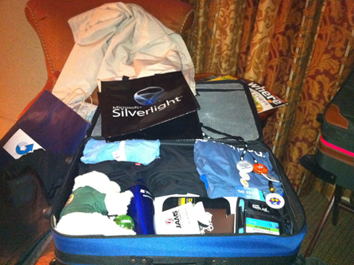

Lets Go To TechEd 2012!
This week at work I was informed that I was approved to go to TechEd 2012! Last year was my first year going, and getting to go back again sounds fantastic to me because it is such a fun and educational time! However planning everything can get a bit tricky because there are so many hotels to choose from, and it gets a lot more complicated planning what all break-out sessions you want to go to. This article is written to help you get approval to go, and getting travel arrangements made. Once time gets closer to the actual convention I will be writing articles on ways to best plan your schedule there.
{kind=link}
Step 1: Getting approval from work
There are many ways to approach this and this depends a great deal on your employer and your very own situation. I can tell you now the first time I went to TechEd in 2011 I was sent thanks to my Nina Mason Pulliam Scholarship. For the specific grant for TechEd they gave me I had to write an essay and it had to be approved by the board. The best part of the TechEd website is they have a section for convincing your boss. This has some great talking points and by browsing over this site and 3 years of college education at that time I was able to write out a nice essay on why they should send me.
For most people the above situation will not happen and it will be you trying to get your employer to pay for you to go. With this it is a bit more tricky with where you work.
You have two options for your initial communication with your boss about this. First you can use the email template that is well written and looks great, but is not personal and most likely your boss will find it and decide you put no effort into your request. if you dare try this route it is found as the 2nd option on the Convince Your Boss page.
The option I prefer and used is making your own custom messages and knowing all the details before requesting.
- Download the PDF for Key Talking Points for IT Professionals
- Read the entire thing!
- Skim over the pre-made email they offer to get an idea on how to write Don’t plagiarizer it! Not that you will be suspended or anything it is just poor professionalization and your boss will probably find out.
- Decide on 2-3 topics that really interest you at TechEd. Mine were
- SharePoint
- Office 365
- Windows/Server 8
- Speak with your boss before sending the request. By doing this you are adding a more personal touch and you should mention that you will follow up your conversation with an official email request.
- Start your email off with a sentence mentioning this is a follow up to the conversation we recently had. Let them know why this is good for you to go. I let him know that I was wanting to get more in-depth with SharePoint, and that they will be having more details on Windows 8/Server 8 because that is a big project I am currently doing. I made this message look like a request but it wasn’t nearly as long and detailed as it could have been. I finished my message off offering to write an official request and ask if that is needed what types of details it needed to have.
Once you have finished all of those steps do not just leave it be. I waited 2 weeks before I checked with my boss on the status of this. All you need to do is keep the thought of this semi fresh in their mind and it will probably have a good out come.
Step 2: I got approval! Oh dang now I gotta pick a hotel!
This step isn’t the hardest but it certainly is time consuming. For TechEd 2012 there are 23 hotel options. Which 5 of them are already sold out. That narrows the list a little bit but you still need to select from 18 hotels. Which hotel you select depends a large amount on you.
Keep Cost Low:
If you are required to keep cost low as possible then these are the hotels to choose from. I’ll tell you now none of them are very close. The closes one is .5 miles and that is the La Quinta Inn & Suites, doesn’t sound far but if you are hiking it the whole day, after rushing between break-out sessions you will feel dead by Day 3. None of the hotels on this list are greater than 1 mile.
- La Quinta Inn Orlando I-Drive – $89.00/Night
- La Quinta Inn & Suites Orlando Convention Center – $115.00/Night
- Holiday Inn & Suites Hotel Orlando – $132.00/Night
Keep Me Close:
Now the option I went with was being as close as possible to the TechEd 2012 Convention, simply because I do not feel like having a dead wheelchair battery by the end of the day. By selecting this option you are not selecting the most expensive place to stay, however it isn’t on the Low Cost list.
- The Peabody Orlando – $234.00/Night – 4 minute Walk
- Rosen Centre Hotel – $205.00/Night – 5 minute Walk
- Rosen Plaza Hotel – $195.00/Night – 9 minute Walk
(Optional) Step 3: Lets Fly!
This is going to be short simply because I am driving and this isn’t relevant to me. If you decide you are going to fly; I highly suggest Southwest, I’ve always flown them and it is a good deal with the 2 bags free. During your week at TechEd you will get a ton of free stuff you and you will need an empty suite case just for it NO JOKE! Look at the below picture, that suite case was completely empty on arrival at the conference. Currently from Indianapolis to Orlando Florida you are looking at paying $291.60 for round trip. I wouldn’t be surprised to see the price drop at some point and go back up as usual.
[caption id=”attachment_59” align=”aligncenter” width=”445”] TechEd 2011 Swag[/caption]
{kind=link}